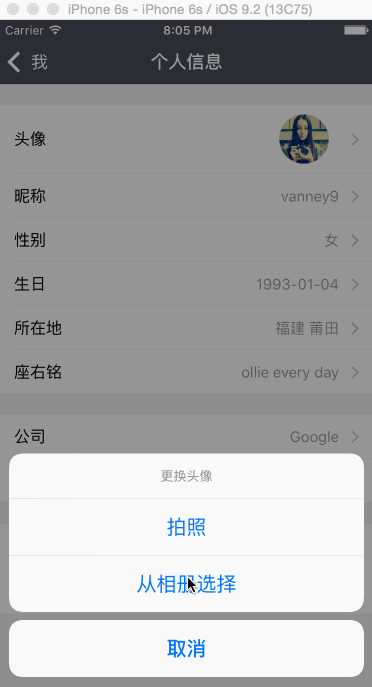
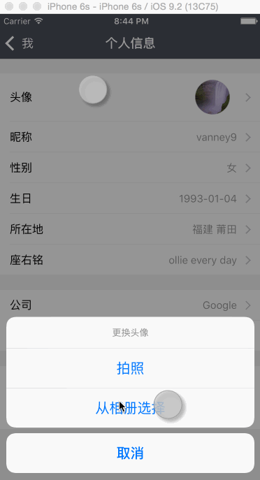

2016/05/30:
这周我们小组的同学有两门考试，还要准备周五的报告，于是早早的更新一下我们的进度，从获取图片开始熟悉移动端的开发。
前言
一款App很有可能需要访问系统的图库（照片）或者通过相机来获取图片，比如更换用户头像等等。效果如图👇

下面来看看如何实现
查看访问权限
App在第一次访问系统照片或者相机时，通常需要询问是否有权限去access相片图库或者使用相机。可以通过下面代码得知目前该app的权限👇1
@import AVFoundation;
@import Photos;
// 检查使用相片的权限， YES为可以访问，NO为不能使用
+ (BOOL)checkPhotoLibraryAuthorizationStatus {
if ([PHPhotoLibrary responseToSelector:@selector(authorizationStatus)]) {
PHAuthorizationStatus status = [PHPhotoLibrary authorizationStatus]; // 获取当前app对相片的权限
if (status == PHAuthorizationStatusDenied || status == PHAuthorizationStatusRestricted) { // 若当前权限为不允许使用
[self showSettingAlertStr:@"请在iPhone的“设置->隐私->照片”中打开本应用的访问权限"]; // 提示用户去**设置**中更改权限
return NO;
}
}
return YES;
}
// 检查使用相机的权限， YES为可以使用， NO为不能访问
+ (BOOL)checkCameraAuthorizationStatus {
if (![UIImagePickerController isSourceTypeAvailable:UIImagePickerControllerSourceTypeCamera]) { // 判断该设备是否支持拍照
alert(@"该设备不能拍照")；
return NO;
}
if ([AVCaptureDevice responseToSelector:@selector(authorizationStatusForMediaType:)]) {
AVAuthorizationStatus status = [AVCaptureDevice authorizationStatusForMediaType:AVMediaTypeVideo]; // 获取当前app对相机的权限
if (status == AVAuthorizationStatusDenied || status == AVAuthorizationStatusRestricted) { // 若当前权限为不允许使用
[self showSettingAlertStr:@"请在iPhone的“设置->隐私->相机”中打开本应用的访问权限"]; // 提示用户去**设置**中更改权限
return NO;
}
}
return YES;
}
// 提示用户去设置中更改权限
+ (void)showSettingAlertStr:(NSString *)tipStr {
if (floor(NSFoundationVersionNumber) > NSFoundationVersionNumber_iOS_7_1) { // iOS7.1之后的可以直接进入设置
// 新建提示弹框
UIAlertView *alertView = [UIAlertView bk_alertViewWithTitle:@"提示" message:tipStr];
[alertView bk_setCancelButtonWithTitle:@"取消" handler:nil];
[alertView bk_addButtonWithTitle:@"" handler:nil];
[alertView bk_setDidDismissBlock:^(UIAlertView *alertView, NSInteger buttonIndex) {
if (buttonIndex == 1) {
// 跳转到设置界面进行设置
UIApplication *app = [UIApplication sharedApplication];
NSURL *settingsURL = [NSURL urlWithString:UIApplicationOpenSettingsURLString];
if ([app canOpenURL:settingsURL]) {
[app openURL:settingsURL];
}
}
}];
}
}
效果如下👇

UIImagePickerController
UIImagePickerController是系统提供的用来拍照或者使用系统相片的用户界面。
使用UIImagePickerController需注意：
- sourceType属性: 该属性说明UIImagePickerController会如何显示界面。如果sourceType为UIImagePickerControllerSourceTypeCamera，那么系统会呈现一个拍照的界面；如果sourceType为UIImagePickerControllerSourceTypeSavedPhotosAlbum，那么系统会呈现一个选取系统照片的界面
- 检查app是否有权限使用相机或者系统相片
下面来看看使用示例👇1
+ (void)showImagePickerController {
UIImagePickerController *pickerController = [UIImagePickerController alloc] init]; // 初始化
pickerController.delegate = self;
pickerController.allowsEditing = YES; //允许用户编辑拍摄的图片或者选取的相册的图片
if (camera) { // 选择相机
if (![Helper checkCameraAuthorizationStatus]) { // 根据上文的函数，判断是否有使用相机的权限
return;
}
pickerController.sourceType = UIImagePickerControllerSourceTypeCamera; // 指定sourceType为Camera，pickerController将会提供一个拍摄的界面
} else { // 选择系统图库
if (![Helper checkPhotoLibraryAuthorizationStatus]) { // 根据上文函数，判断是否能够access系统图库
return;
}
pickerController.sourceType = UIImagePickerControllerSourceTypeSavedPhotosAlbum; // 指定sourceType为SavedPhotosAlbum，pickerController将会提供一个选取系统相片的界面
}
[self presentViewController:pickerController animated:YES completion:nil]; // 展示UIImagePickerController
}
// UIImagePickerControllerDelegate
// 进入UIImagePickerController后如果选择`cancel` 就不做什么处理
- (void)imagePickerControllerDidCancel:(UIImagePickerController *)picker {
[picker dismissViewControllerAnimated:YES completion:nil];
}
// 进入UIImagePickerController后如果选择`done` 做一些处理
- (void)imagePickerController:(UIImagePickerController *)picker didFinishPickingMediaWithInfo:(NSDictionary<NSString *, id>*)info {
// 推出UIImagePickerController并处理选取的图片
[picker dismissViewControllerAnimated:YES completion:^{
UIImage *editedImage, *originalImage;
editedImage = [info objectForKey:UIImagePickerControllerEditedImage]; // 获取编辑后的图片
// do something here: like take this edited image as user avatar or something else
// 如果是相机拍摄的图片，那么将原图保存到系统图库
if (picker.sourceType == UIImagePickerControllerSourceTypeCamera) {
originalImage = [info objectForKey:UIImagePickerControllerOriginalImage]; // 获取编辑之前的图片
UIImageWriteToSavedPhotosAlbum(originalImage, self, nil, NULL); //将图片保存
}
}];
}
P.S
本文代码都参考自Coding-iOS